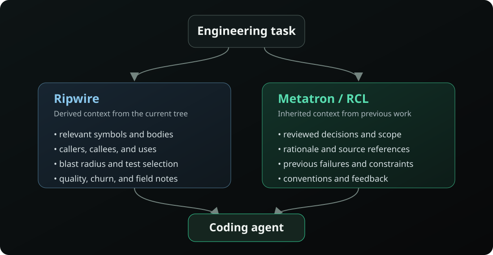

Ripwire and Metatron: code intelligence meets repository memory
Ripwire maps what a repository contains. Metatron preserves what the repository has learned. The distinction is useful—but Ripwire's new persistent notes make the boundary much more interesting than that slogan suggests.
Source note: I reviewed Ripwire at
c7914e8,
Metatron 0.13.0 at
8cd80db,
and the RCL paper/artifact at
686a1cf
on September 7, 2026. Ripwire is moving quickly; the pinned links preserve the
evidence behind this comparison, while the project root shows the latest behavior.
One cold-start tax, two kinds of context
A coding agent entering an unfamiliar repository has two different deficits. First, it does not know the implementation: which symbols matter, who calls them, how a change propagates, or which tests exercise the affected path. Second, it does not know the history: why the implementation is shaped this way, which cleaner-looking alternatives already failed, or which production constraint is not visible in the type system.
Both deficits produce the same outward behavior. The agent greps, opens files, follows references, forms a theory, and sometimes repeats an experiment that somebody ran six months ago. But the missing information has different origins.
Metatron primarily carries context forward from work that happened before.
In shorthand: Ripwire gives agents code intelligence; Metatron gives repositories institutional memory. “Primarily” matters. Ripwire now persists agent-authored field notes, and Metatron can bootstrap candidates from structural and Git signals. The projects overlap. They simply put their architectural weight on different sides of the same boundary.
Ripwire derives a working model of the current tree
Ripwire describes its pipeline as
ingest → graph → rank → serialize → CLI / MCP. The
architecture document
is unusually explicit about what each stage can and cannot establish. It crawls the
tree deterministically, extracts symbols and references with vendored tree-sitter
queries for 21 languages/configuration formats, resolves references into an
intentionally approximate call graph, and ranks that graph. Ambiguous name resolution
is not silently collapsed: multiple candidates receive split edges, uncertainty is
reported, and a SCIP index can overlay compiler-grade targets where one exists.
Structural importance and task relevance are separate signals. Personalized PageRank provides the repository map; task retrieval uses lexical evidence over names, subtokens, documentation, and bodies. The default task router selects a name-exact lane for identifier-shaped queries and a subtoken-plus-body BM25 lane for prose. Git adds another view: churn, changed-file personalization, co-change relationships, and the revision against which an answer was generated.
The result is a set of practical answers that line up with the questions an agent asks before editing:
--for="task"ranks the symbols and files likely to matter, annotating them with reuse, complexity, churn, test reach, and change amplification.--expand=SYMreturns the requested body, sibling symbols, imports, and direct callee signatures without requiring a whole-file read when the bundle is cheaper.--callers,--callees, and--usesexpose the immediate neighborhood.--impact=SYMwalks the reverse call graph for a transitive blast radius, explicitly treating its counts as floors because dynamic dispatch and indirect calls remain blind spots.--test-gatecombines changed symbols, graph reach, test symbols, script literals, and declared manifest evidence to name tests to run and affected code with no indexed test reach.
These commands are documented with their output and caveats in
docs/COMMANDS.md.
The tool also reaches beyond navigation. --quality-panel joins independent
structural, lexical, confusing-idiom, history, colocation, and non-local-state lenses;
--quality-delta reports quality signals that became worse relative to Git.
The same graph is available through a persistent
MCP server
over stdio or Streamable HTTP.
The agent-level benefit is not mysterious. Without a map, a model spends context on exploratory grep results, whole files, wrong turns, and repeated calls for callers and tests. Ripwire performs those joins deterministically and emits a ranked, bounded answer. It does not make reading source unnecessary. It makes the expensive question “what should I read?” cheaper to answer.
--pack-task is the clearest expression of that design
Ripwire's
--pack-task
command assembles the orientation loop in one call. Under a shared default budget of
6,000 estimated tokens, it emits a routed ranking, full bodies for top candidates,
one-hop caller signatures, field notes, and relevant tests. The quotas are fixed up
front—40% ranking, 30% bodies, 15% callers, 5% notes, 10% tests—and unused budget rolls
forward. Every truncated section says so.
That is more than a compact repository map. It is a task-shaped work packet. It answers: start here, read these implementations, understand these callers, remember these local facts, and verify with these tests. It is also the point where Ripwire's structural context and persistent memory already meet.
Some engineering knowledge cannot be re-derived
Consider two statements:
A calls B.
We deliberately avoided C because it caused X in production,
even though C appears cleaner.The first is a property of the current program. A parser and resolver can derive it, subject to familiar static-analysis limits. If the code changes, recompute the answer.
The second is a property of the engineering process. The current tree may contain no evidence that C ever existed. A test may encode the boundary without explaining it. A commit may show the removal without preserving the production symptom. Even a perfectly reconstructed AST cannot recover a counterfactual the repository never recorded.
This missing class includes architectural rationale, rejected approaches, debugging discoveries, non-obvious operational constraints, production lessons, conventions, known traps, and the reasons behind unusual implementation choices. A capable model can infer a plausible explanation. Plausibility is exactly the danger: institutional memory must distinguish “the team learned this” from “the agent invented a coherent story.”
Ripwire notes cross part of that boundary
This is the most interesting part of the comparison. Ripwire's
.ripwire_notes
is a committed, sorted, repository-root file. A note targets either a file or a symbol.
On write, --note-add accepts several symbol spellings, resolves the target,
and canonicalizes an unambiguous symbol to the same ID used by retrieval—roughly
path::scope::name. Ambiguous symbols are refused rather than attached to an
arbitrary definition. A path may be recorded before the file exists, but it is marked
dangling until something matches it.
New notes use Git's committer date and, when Git information is available, carry the full
HEAD SHA and branch where the observation was recorded. A claim such as “fixed” is
therefore anchored to the revision where it was believed true. --notes lists
the store and dangling targets. More importantly, notes are not passive documentation:
they automatically appear on matching symbols and files in future --for and
--expand results, as well as the corresponding MCP retrieval tools.
Ripwire even nudges the author toward decision-shaped text. If a note contains no causal
marker such as “because,” “chose,” “over,” or “instead,” the writer receives a gentle tip.
The note still lands—the hint is guidance, not a gate. The behavior and its limits are
specified directly in the
--note-add and --notes documentation.
.ripwire_notes is not merely annotation metadata.
It is persistent, Git-provenanced, automatically retrieved repository memory attached
to canonical structural identities.
That changes the comparison. Ripwire no longer lives entirely in the category of disposable derived indexes. It can preserve facts the parser did not discover and return them at the moment an agent encounters the relevant code.
Metatron puts the knowledge lifecycle at the center
Metatron's primary unit is a structured engineering decision: a pattern, its
scope, the rationale, a confidence level, and
source_refs. In the default files-first mode, each decision is a Markdown file
under context/, versioned beside the code and discoverable through a root
context.md. MCP is an optional relevance-ranked serving layer rather than a
requirement. The
Metatron README
documents both modes and their shared data model.
The lifecycle is the product boundary:
agent discovers something
↓
candidate knowledge
↓
human review / promotion
↓
canonical repository knowledge
↓
future agents consume it
↓
feedback and refinement
The exact review mechanism is configurable. With Metatron's default
review_gate = "pr", an agent writes a decision directly under
context/decisions/ on its working branch; human approval of the pull request is
the curation act. With review_gate = "candidates", the proposal first lives in
context/candidate/ and promotion is a separate reviewed move. In MCP mode,
ingestion and feedback refinement likewise create candidates, never canonical decisions.
Metatron records more than acceptance. Scope controls where a decision applies. Rationale preserves the causal explanation. Source references let a reviewer inspect the evidence. Confidence expresses how strongly that evidence supports the rule. Agent feedback can change ordering among already-canonical, equally relevant decisions, but cannot promote, demote, or rewrite knowledge across the canonical boundary. Missing-context reports are captured, reshaped into structured candidates, and returned to review.
That review boundary matters because persistent agent memory has asymmetric failure costs. A wrong search result wastes one session. A wrong standing instruction can shape every future patch. Automatic memory can turn a single mistaken inference into a repository-wide convention; review turns persistence from repetition into governance.
A team can of course review .ripwire_notes diffs in ordinary pull requests, and
many will. The narrower distinction is that Ripwire's current note abstraction does not
itself encode candidate versus canonical status, promotion, structured confidence, or a
feedback/refinement workflow. Metatron makes those states and transitions explicit because
its central problem is maintaining institutional knowledge, not only storing observations.
The benchmarks ask different questions
The projects' numbers are easy to place in one table and easy to misread. Ripwire primarily evaluates whether a deterministic representation retrieves the code an issue requires, and how much context that retrieval costs. The Metatron paper primarily evaluates whether knowledge from earlier repository work transfers to a later agent. Those are adjacent hypotheses, not competing estimates of one effect.
Ripwire: representation and retrieval of the current codebase
On Ripwire's current 60-instance, Python-dominant held-out LocBench comparison, strict
file@10—all gold files present in the top ten—was 58.3%, with 85.0%
any@10. The best alternative in that particular comparison reached 40.0%
strict and 63.3% any. Ripwire reports a 0.31-second median index build and a 0.108-second
median query for that run. The
README publishes the full table, including losses and competitor caveats.
A separate, wider held-out comparison measures Ripwire's shipped routed --for
against its own pre-routing baseline: 243 instances across 78 repositories, 60.9% versus
27.6% strict file@10, with a 25.0-point clustered-bootstrap lower bound on the
33.3-point paired gain. The routed form also used 39.4% fewer tokens at the production
ceiling. The difficult edge is visible in the strata: 73.4% strict for single-file gold,
18.2% for multi-file gold. The corrected protocol, split, metrics, and limitations live in
bench/locbench/README.md.
Those are localization results. They support the claim that Ripwire can give an agent a better, cheaper starting set than unshaped search. They do not by themselves show that an agent fixes more bugs.
Ripwire's historical
bench/ANSWERQUALITY.md
records a private two-bug agent A/B. Both baseline and Ripwire solved 2/2; the Ripwire arm
used about 88K tokens versus 118K and localized with roughly one command rather than about
four grep/read steps. That is directionally consistent with an efficiency claim, but N=2,
named-symptom bugs, and a private corpus cannot establish a resolve-rate effect.
The repository's newer, centralized evaluation ledger is stricter still: it explicitly withholds any claim that Ripwire changes whether an agent solves a task, says the planned SWE-bench evaluator has not run, and treats retrieval quality as a proxy whose relationship to task success remains to be demonstrated. That is the right way to read Ripwire's current evidence.
Metatron/RCL: transfer from previous repository work
Context Inheritance: A Git-Native Architecture and Pre-registered Study of Repository Context for AI Coding Agents asks a different question: can context learned or authored before task B change how an agent performs task B?
On topic-matched SWE-bench Verified tasks, blind frontier-authored context raised an 8B local model's gold-file localization from 21.1% to 47.2%: +26.1 percentage points, p<0.0001. The same executor's self-authored lessons moved localization by 0.0 points. Resolve remained low at that tier; the result is about navigation, not doubled bug-fixing success. The paper interprets this as a capability-dependent author/reader pattern: weaker agents can inherit useful context from stronger authors, but did not benefit from the lessons they wrote themselves in this setup.
With a frontier executor on 16 constraint-sharing pairs across 11 groups, failure-derived lifecycle context moved resolve from 58.3% to 72.9% (+14.6 points). The raw paired p-value was 0.041, but 0.081 after the pre-registered Holm correction, so the current paper reports the direction rather than a confirmed effect. In the same regime, tokens per resolved task fell from 81.8K to 55.7K (−32%); because that ratio depends on the directional resolve difference, it is an economic observation for this sample rather than a settled general effect.
The paper also reports a ceiling. On a broader random 88-instance sample, the frontier no-context baseline already resolved 90.9%, and no delivery condition improved it. Context helps only when it carries knowledge the reader needs and the task actually reuses. The full protocol, transcripts, audits, and reproduction scripts are in the public experiment artifact.
Two caveats are essential. The study evaluated the Repository Context Layer architecture
through a minimal harness, not Metatron's product end to end. Its study context was
blind-authored or generated inside the experimental lifecycle; it did not test Metatron's
automatic ingest pipeline. Ripwire's localization numbers therefore neither
validate nor contradict the RCL transfer claim, and the RCL results say nothing about
Ripwire's relative retrieval quality.
How the two layers could compose
Suppose an agent must change token refresh behavior. Ripwire could turn the task into a structural packet:
start at refreshToken
inspect these callers
these downstream symbols sit in the blast radius
these tests reach the changed pathMetatron could add the experiential packet:
do not rotate tokens inside the database transaction
a previous implementation caused lock contention
publish the session event only after commit
follow the newer auth service, not the legacy workerThe combined architecture is straightforward:

Ripwire supplies structural context. Metatron supplies experiential context. Ripwire's
token-budgeted --pack-task makes this composition conceptually natural: reserve
a bounded share for the current code surface, retrieve a bounded share of relevant canonical
decisions, and let the agent spend its remaining budget on implementation and verification.
In a tighter integration, Ripwire's canonical symbol IDs and affected-file set could even become
scope signals for retrieving institutional knowledge.
The competitive overlap is real
If Ripwire evolves field notes along a path like this:
notes
→ candidate knowledge
→ explicit provenance
→ review
→ canonical decisions
→ relevance retrieval
→ feedback
→ supersession and stalenessthen it moves much further into Repository Context Layer territory. That would not be a rhetorical reclassification; it would be a change in the trust model. The system would no longer only remember what an agent wrote. It would manage which claims the repository is willing to teach every future agent, why, for which scope, based on what evidence, and until when.
Conversely, Metatron probably should not become another AST, call-graph, or indexing engine. Structural analysis is language-specific, full of resolution edge cases, and expensive to make honest. Ripwire's explicit ambiguity, completeness, and token-budget contracts show how deep that work goes. A repository-memory layer can consume mature structural tools as inputs and remain focused on durable engineering knowledge.
Derived context and inherited context need different rules
The broader architectural pattern is not “two databases.” It is two categories of context with different freshness, failure, and governance properties.
| Derived context | Inherited context | |
|---|---|---|
| Source | Current files, syntax, graph relationships, tests, Git state | Prior debugging, decisions, incidents, review, operational experience |
| Freshness strategy | Recompute from the checked-out tree | Version, review, revise, supersede |
| Typical failure | Incomplete or imprecise analysis: a hidden dynamic call, a ranking miss | Wrong, stale, or over-generalized institutional instruction |
| Trust mechanism | Determinism, coverage disclosure, uncertainty, reproducibility | Provenance, scope, confidence, human review, audit history |
| Optimization target | Reduce search and reconstruct the present cheaply | Reduce rediscovery and carry lessons across time |
Derived context is disposable by design. If the code changes, throw the map away and rebuild it. Automatic generation is safe enough when the output is reproducible and its uncertainty is visible, because source remains the authority.
Inherited context is authoritative by design. Future agents may act on a warning even when nothing in the current task independently points to it. That makes write quality, provenance, review, scope, and staleness first-class concerns. The value comes from surviving longer than one analysis run; so does the risk.
Coding-agent systems will likely need both. Without derived context, an agent wastes work reconstructing a large codebase. Without inherited context, it efficiently navigates toward mistakes the team already knows how to avoid.
FAQ
What is the main difference between Ripwire and Metatron?
Ripwire primarily derives structural context from the current repository: symbols, calls,
relevant code, tests, blast radius, and quality signals. Metatron primarily maintains
reviewed engineering knowledge: decisions, rationale, constraints, rejected approaches,
and lessons. Ripwire notes create meaningful overlap between the two.
Does Ripwire already have repository memory?
Yes. .ripwire_notes is committed, attached to files or canonical symbol IDs,
Git-provenanced, and automatically recalled. The open distinction is governance: Ripwire's
note abstraction stores field observations, while Metatron models a candidate-to-canonical
knowledge lifecycle with structured evidence and review.
Can the systems be used together?
Conceptually, yes. Ripwire can prepare a bounded structural work packet; Metatron can add
relevant reviewed decisions and prior failures. A coding agent can consume both without
either layer pretending to replace the other.
Repositories used by coding agents may increasingly contain two forms of machine-readable context: what can be derived from the code today, and what previous engineers and agents learned yesterday.
Ripwire is an interesting example of the first category beginning to reach toward the second. Metatron starts from the second. The most interesting future may be where those layers meet.